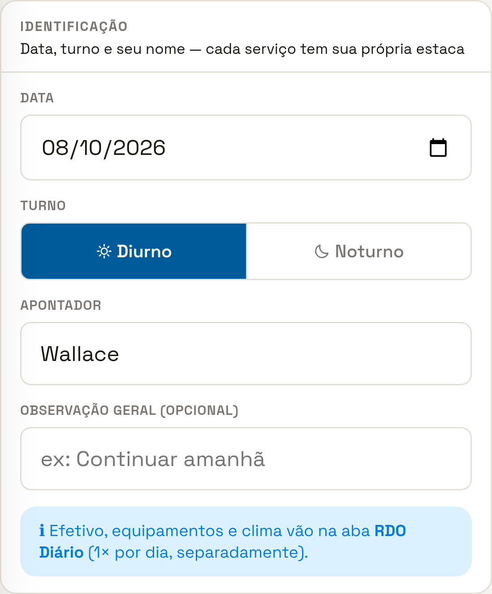
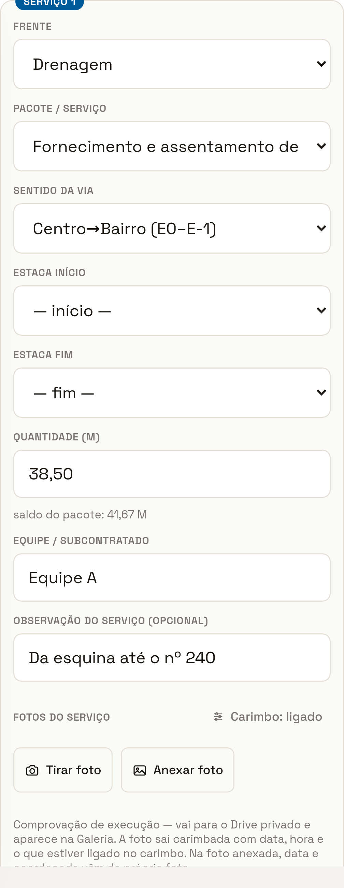
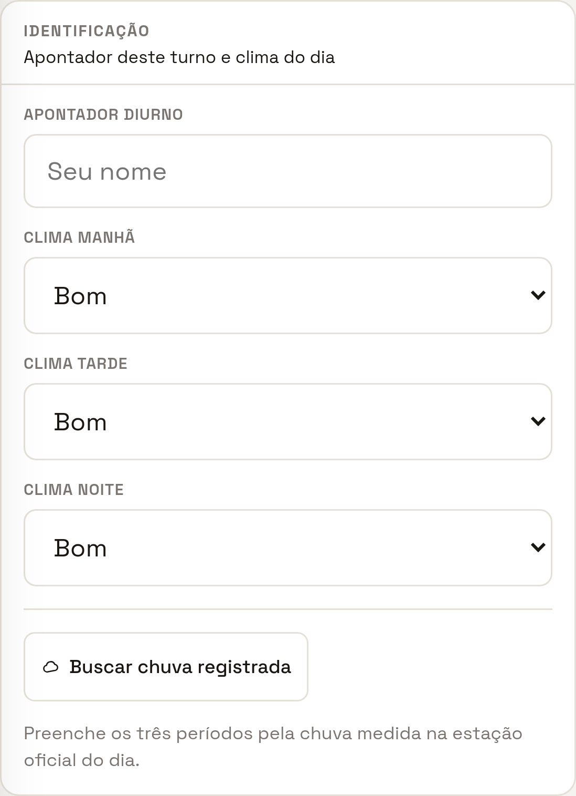
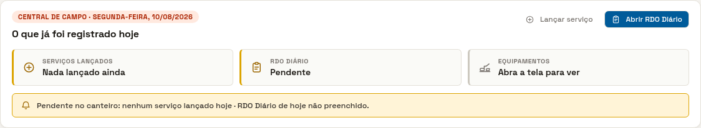
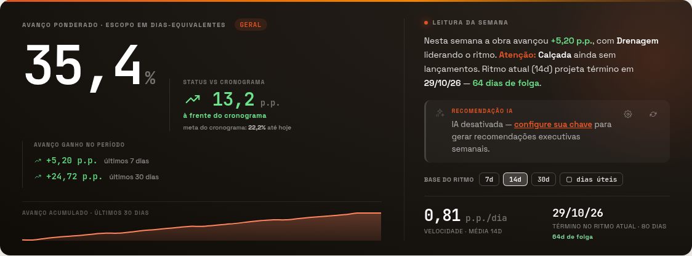

1 2 31Data — já vem com hoje. Esqueceu ontem? Troque a data e lance normal.
2Turno — diurno ou noturno.
3Seu nome — digite uma vez; fica guardado no aparelho.
O apontador lança no celular, na frente de serviço. O escritório vê na hora. A medição já sai pronta. Uma digitação só.
Toque no seu. Você só precisa da sua parte.

1 2 3
1 2 não use nesta obra 3 4 5 6
★




Lance no dia. Quantidade lembrada 3 dias depois é chute.
Vírgula, nunca ponto. 38,50 — o ponto é separador de milhar.
Um pacote, uma linha. Somar tudo esconde qual frente andou.
Confira o saldo antes de enviar.
RDO todo dia, inclusive no dia parado — com o motivo.
Foto no que fica enterrado. Vala, lastro, reaterro.
Não apague — corrija. Histórico → editar.
Nunca empreste o login. No RDO, isso é assinatura de quem não estava lá.
A obra já está cadastrada: 2 ruas, 6 frentes e os 56 serviços do orçamento com as quantidades previstas.